Bản dựng để đối chiếu và tiếp tục chỉnh sửa. Front là mẫu chính hiện có; góc nghiêng, sau lưng và các đạo cụ đang chờ ảnh bổ sung.
01 / Kiểm tra đúng nhân vật
Ảnh chuẩn — giữ nguyên tỉ lệ và vị tríBản vector — 77 đường, 18 nhóm có hình
02 / Chồng nét
03 / Cấu tạo & từng bộ phận
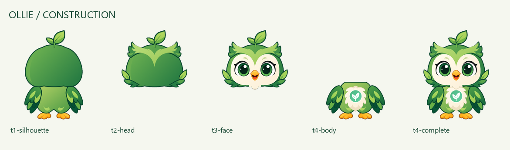
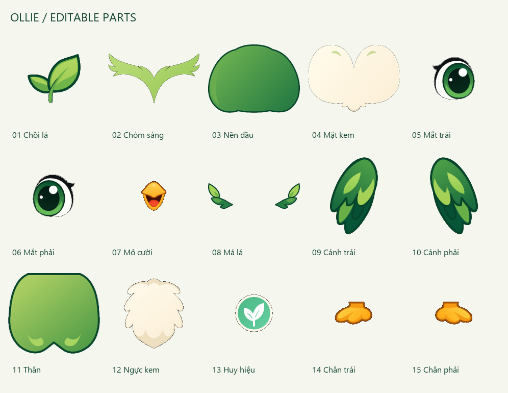
04 / Biểu cảm
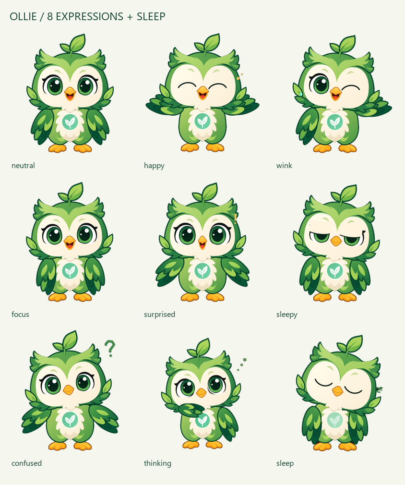
04a / Đang suy nghĩ
Cánh gần cằm, mắt nhìn chếch lên, đầu nghiêng chậm và ba chấm suy nghĩ. Vòng lặp 3 giây. Xem phân tích và khung chuyển động · Chọn biểu cảm 8 trong playground để chạy trực tiếp.
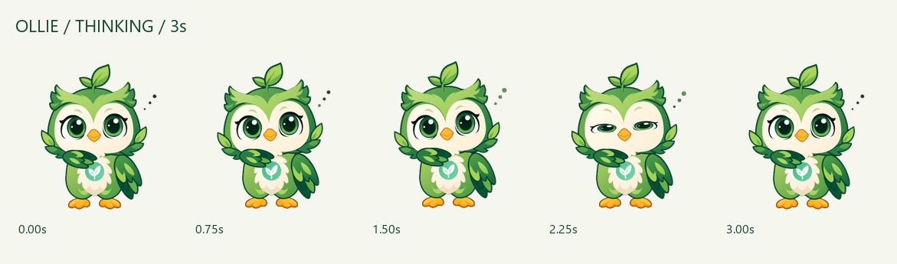
04b / 19 cảnh chuyển động mới
Chọn và chạy từng cảnh · Phân tích bảng sticker, nét mặt, đạo cụ và nhịp chuyển động
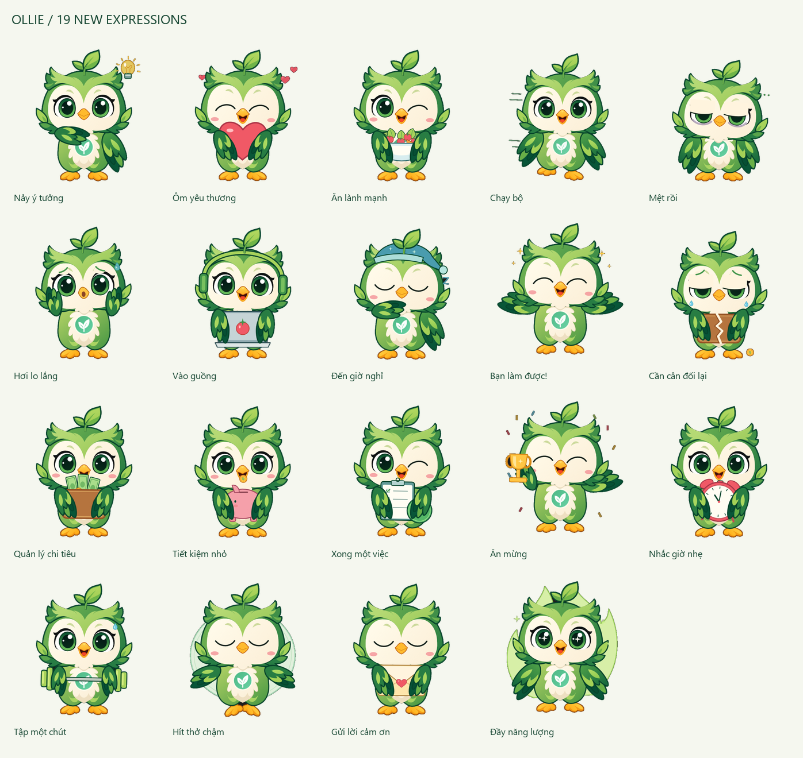
05 / Chuyển động
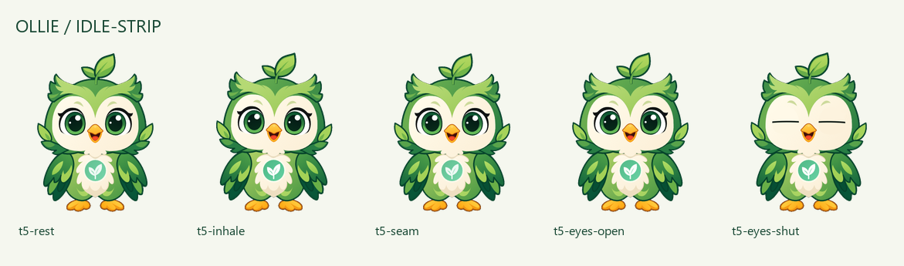
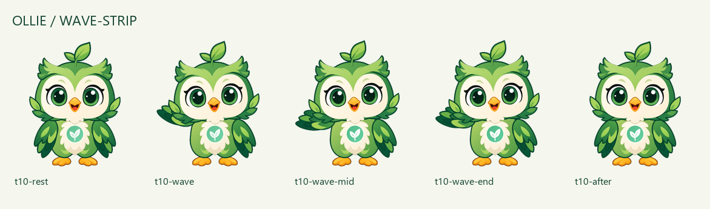
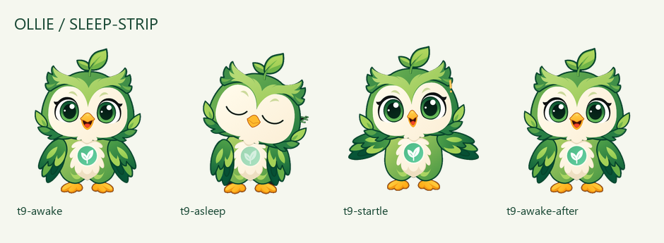
06 / Kích thước ứng dụng
80 px120 px240 px
Tất cả frame probe (39)
 t1-defaultt3-small
t1-defaultt3-small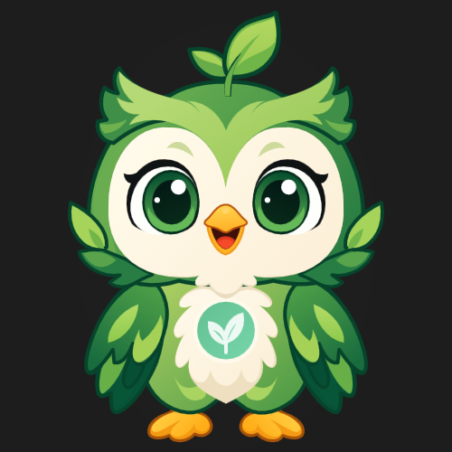
t5-rest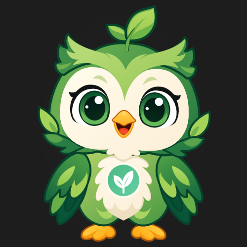
t5-inhale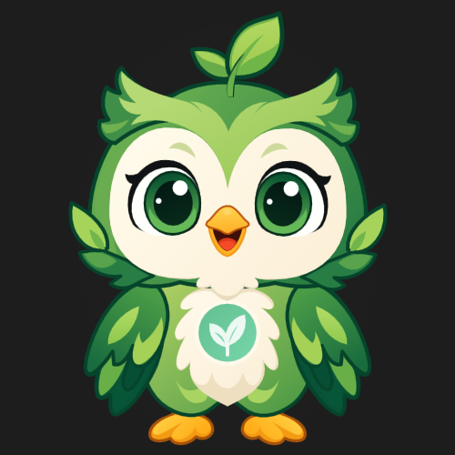
t5-seam t5-eyes-opent5-eyes-shutt6-neutralt6-happyt6-wink
t5-eyes-opent5-eyes-shutt6-neutralt6-happyt6-wink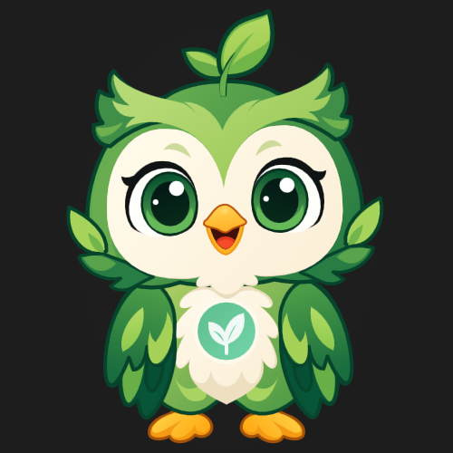
t6-focus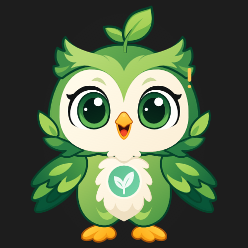
t7-surprisedt7-sleepyt7-confusedt7-thinkingthinking-0thinking-25thinking-50thinking-75thinking-100 thinking-asleepthinking-wake
thinking-asleepthinking-wake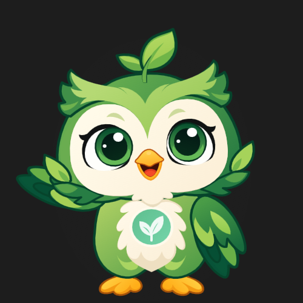
thinking-wavethinking-after-wave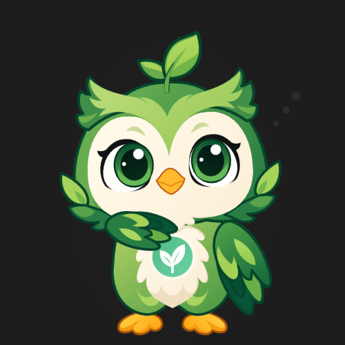
thinking-baseline-aftert7-happy-blinkt7-sleepy-blink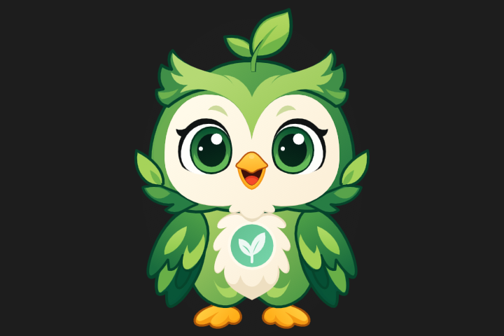
t8-letterbox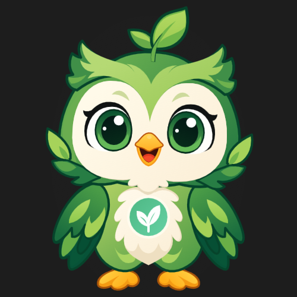
t9-awake t9-asleep
t9-asleep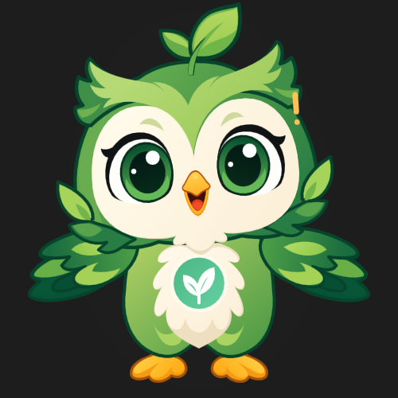
t9-startle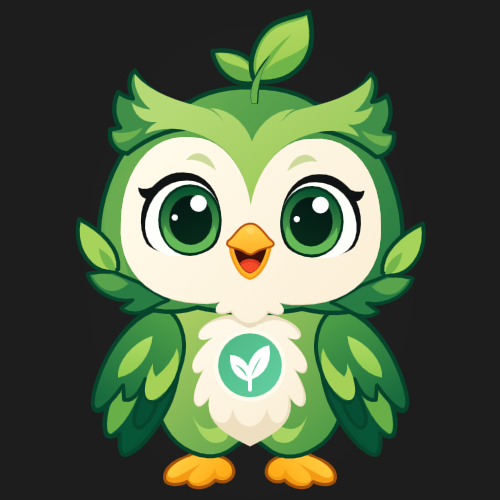
t9-awake-aftert9-sleep-wavet10-rest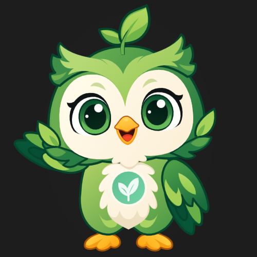
t10-wave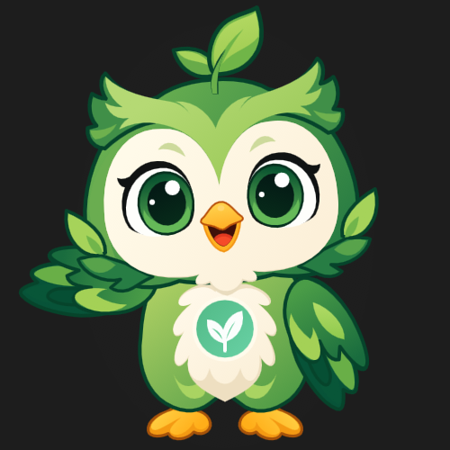
t10-wave-midt10-wave-end t10-aftert10-baseline-after
t10-aftert10-baseline-afterBiểu cảm ngoài front là bản phát triển từ ảnh chuẩn, chưa phải mẫu đã được bạn duyệt. Xem README.md để thêm ảnh và dựng lại.